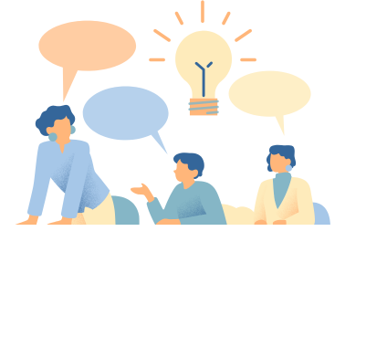

行政服务 Admin Support
|线上申请平台 Online Platform
一站式行政支持平台，全面覆盖日常办公、出行安排、资产管理与现场服务。
我们以稳定、高效的线上服务，为研究所的日常工作提供坚实保障。
One-stop administrative support platform, fully covering daily office operations,
travel arrangements, asset management, and on-site services.
We provide stable and efficient online solutions to ensure solid support for the institute’s day-to-day work.